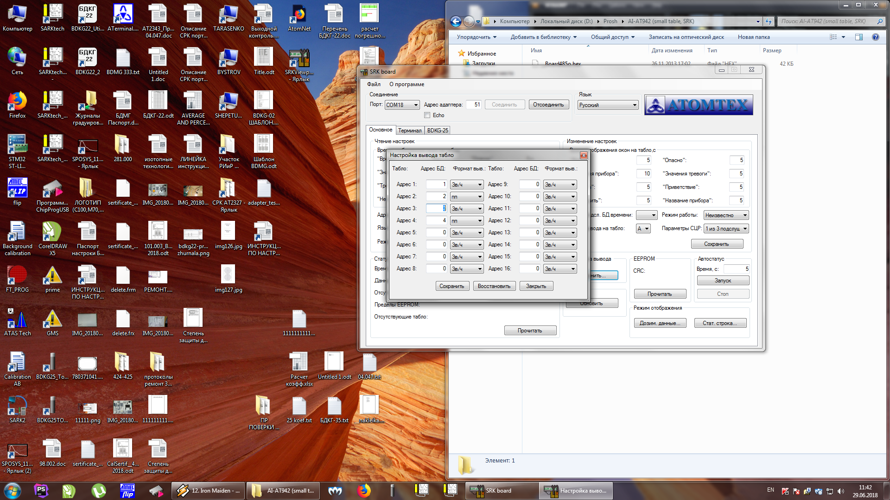

942-й адаптер интерфейсный


- Подключить питание
- Вставить перемычку
- Подключить спец кабель к BLS
- Запустить Flip
- Скорость 19200?
- Прошивка:
- Достать перемычку

Далее следует настроить адаптер
- Подключить 942-й адаптер через USB-COM адаптер
- Запустить программу SRK-Board 